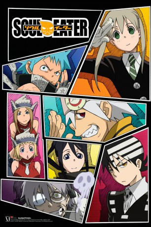

")
 
 IMDB-Wertung: 8.0 / 10
IMDB-Wertung: 8.0 / 10  Metascore:
Metascore: 
Der Schauplatz von Soul Eater ist die Shibusen-Universität, deren Schüler sogenannte Meister (Shokunin im Original) sind. Jeder von ihnen hat eine Art lebende Waffe als Partner und sie alle verfolgen das Ziel, ihre Waffe zu einer Death Scythe zu machen, indem sie die Seelen böser Menschen aufsammeln. Das ist aber mehr eine Motivationshilfe, denn das eigentliche Ziel der Universität ist es zu verhindern, dass diese Seelen in die falschen Hände geraten - im schlimmsten Fall in die von jemanden, der damit versucht einen Kishin (eine Art Dämonengott) zu erschaffen. Der Anime verfolgt nun die Abenteuer der Meister Maka, Black Star und Death the Kid mit ihren jeweiligen Partnern Soul Eater, Tsubaki, Patty und Liz, die alle mehr oder weniger ernsthaft versuchen, die Welt vor ihrem Untergang zu bewahren.
Jahr: 2008
Dauer: 22 Minuten
FSK: 16
Land: Japan Studio: AXNTonspuren: DD2.0 - ,
Untertitel: Deutsch,
Auflösung: 720p (1280x720) Größe: 270 MB
Genre: Action, Horror, Komödie, Abenteuer, Animation/Trick, TV-Serie
Regisseur: Takuya Igarashi, Yasuhiro Irie, Tensai Okamura, Takefumi Anzai, Shin Matsuo, Ikurô Satô, Daisuke Chiba, Shingo Kaneko, Yoshiyuki Asai, Toshinori Narita, Ken Andô, Mitsuhiro Yoneda, Makoto Fuchigami, Hiroshi Ikehata, Shin'ichi Tôkairin
Drehbuch: Bones
Soundtrack:
Darsteller:
 Laura Bailey als Maka Albarn
Laura Bailey als Maka Albarn Monica Rial als Tsubaki Nakatsukasa
Monica Rial als Tsubaki Nakatsukasa Todd Haberkorn als Death the Kid
Todd Haberkorn als Death the Kid Mamoru Miyano als Death the Kid
Mamoru Miyano als Death the Kid Chuck Huber als Franken Stein
Chuck Huber als Franken Stein Cherami Leigh als Patty Thompson
Cherami Leigh als Patty Thompson Jamie Marchi als Liz Thompson
Jamie Marchi als Liz Thompson Vic Mignogna als Death Scythe
Vic Mignogna als Death Scythe Luci Christian als Medusa
Luci Christian als Medusa Brittney Karbowski als Black Star
Brittney Karbowski als Black Star John Swasey als Lord Death
John Swasey als Lord Death Rikiya Koyama als Shinigami
Rikiya Koyama als Shinigami Kent Williams als Sid Barrett
Kent Williams als Sid Barrett Houko Kuwashima als Medusa
Houko Kuwashima als Medusa Maaya Sakamoto als Crona
Maaya Sakamoto als CronaDatei: X:\HD-Anime-Serien\Soul Eater\Soul Eater E01 Die Seelenresonanz.mkv seit 11.08.2017
Festplatte: Gemischt-01+Anime
 Es gibt insgesamt 67 Filme in der Gruppe 'HD-Anime-Serien'
Es gibt insgesamt 67 Filme in der Gruppe 'HD-Anime-Serien'